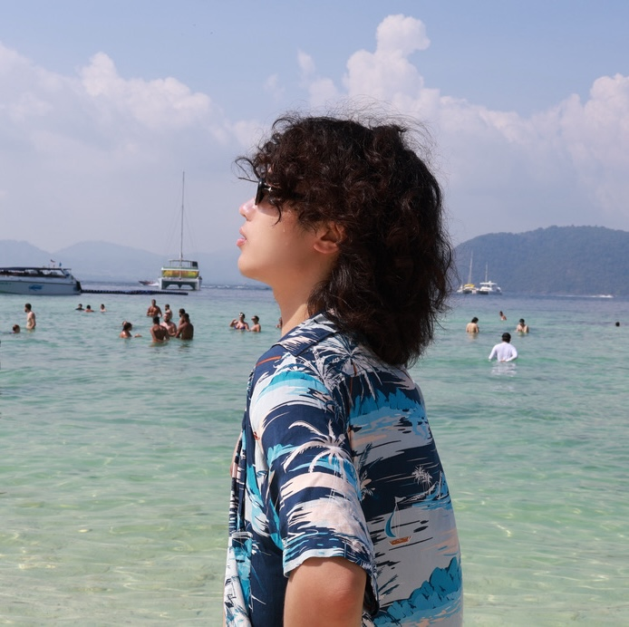

Detecting AI-Generated Video: A Vision-Language Dual-View Survey
Dylan Xinming Hou, Juntian Zhang, Xu Gu, Yichen Wu, Nils Lukas, Gus Xia, Xiuying Chen, Yuhan Liu
M.S. student in Machine Learning, MBZUAI
Music X Lab · BiAlign Lab · Abu Dhabi

Hi, I am Dylan Xinming Hou, an M.S. student in Machine Learning at Mohamed bin Zayed University of Artificial Intelligence, where I work with Gus Xia at Music X Lab. I also work with Hua Shen at BiAlign Lab, NYU Shanghai. Previously, I received my B.E. in Artificial Intelligence from the Gaoling School of Artificial Intelligence, Renmin University of China, where I worked with Wayne Xin Zhao on NLP-related research.
My previous research has explored a range of machine learning topics, including LLMs, digital agents, interpretability, AI safety, mind-inspired (world) models, and human-AI interaction. These projects gave me a technical foundation spanning AI capabilities, behavior, and interaction, while gradually leading me toward broader, more interdisciplinary questions about how humans and AI shape one another.
My current work across Music X Lab and BiAlign Lab builds on this foundation, focusing particularly on designing AI systems inspired by the human mind and responsive to human intentions, while remaining aligned with diverse and evolving human values and supporting human creativity, cognition, and agency. Together, these efforts shape my broader research focus on the foundations of human-AI alignment.
Foundations of Human-AI Alignment
My research studies how increasingly capable AI systems can remain aligned with diverse and evolving human values, and how this alignment can, in turn, expand individual potential and foster collective flourishing.
As AI systems become more capable and deeply embedded in human society, it is essential that their development remain aligned with the diverse and evolving values held by individuals, communities, and cultures across contexts and over time.
I am interested in how AI systems can learn, represent, and respond to human values, intentions, and preferences, while remaining trustworthy, safe, and beneficial.
I am interested in studying human-AI interaction, especially the evolving nature of human-AI co-presence and how it can contribute to human agency, creativity, social understanding, and long-term flourishing, while preserving what makes us human.
How might the emergence of AI as a new participant in human existence transform the ways we explore and heal ourselves, create meaning, and pursue spiritual growth?
Dylan Xinming Hou, Juntian Zhang, Xu Gu, Yichen Wu, Nils Lukas, Gus Xia, Xiuying Chen, Yuhan Liu
Dylan Xinming Hou
Dylan Xinming Hou, Xin Shu, Zhuojiang Cai, Yuting Wu, Yueqing Hu, Enkelejda Kasneci, Haiyang Geng, Gus Xia
Jizhi Zhang, Dylan Xinming Hou, Zhaoyi Li, Muhammad Asif Ali, Gus Xia, Lijie Hu
Zhuoqi He, Zhaoyi Li, Dylan Xinming Hou, Daniil Ognev, Gus Xia, Lijie Hu
Xinming Hou, Mingming Yang, Wenxiang Jiao, Xing Wang, Zhaopeng Tu, Wayne Xin Zhao
Research Assistant, BiAlign Lab, NYU Shanghai With Hua Shen. Bidirectional human-AI alignment, value alignment, and human flourishing.
Research Assistant, Music X Lab Advised by Gus Xia. Human-AI affective interaction and mind-inspired models.
Research Intern, Tencent AI Lab Advised by Wenxiang Jiao and Xing Wang. Human-inspired organization and collaboration mechanisms for multi-agent systems and LLM-based agents.
Research Assistant, RUC AI BOX Advised by Wayne Xin Zhao. Machine learning, NLP, factuality control, prompt pipelines for reasoning, and interpretability.
M.S. in Machine Learning, Mohamed bin Zayed University of Artificial Intelligence Advised by Gus Xia at Music X Lab. Human-centered AI, affective interaction, and mind-inspired (world) models.
B.E. in Artificial Intelligence, Gaoling School of Artificial Intelligence, Renmin University of China With honors.
Shandong Experimental High School Jinan, China.
First Prize, Sa Shixuan Elite Fund Scholarship
Finalist, Mathematical Contest in Modeling (top 2%)
Best Creativity Award, The 14th Student Entrepreneurship Star Competition, JD Cup
National First Prize, National College Student Mathematical Modeling Competition (top 0.6%)
Best System, GSAI Artificial Intelligence Integrated Design
1st place, RUC Group Competitive OJ Contest for Programming Course (Captain, 1/22)